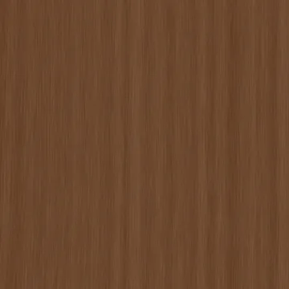
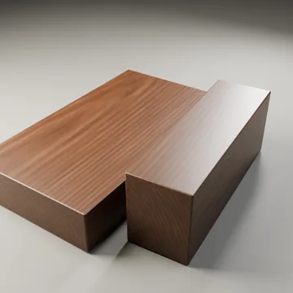
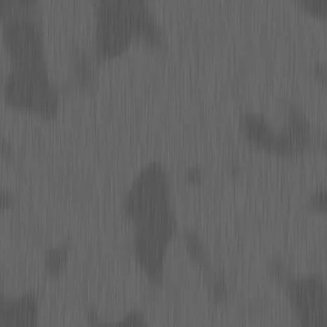
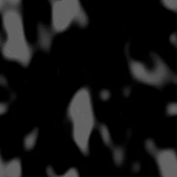

Base color
sRGB · RGB8
4096 × 4096 · 3.75 MiB
SHA-256
4800716da3e81bd743f163736f730447927b36ade4254b582c3c2b9f23c4f9d2Rebuilt suite / 03
Procedural flat-sawn walnut sampled from a radial growth volume, with nonuniform annual rings, diffuse lumen windows, fine rays and shallow worn oil finish.
The specimen and matched surface proof are different presentations. Native texture resolution does not determine render resolution.

Specimen: Blender 4.5.3 LTS · CPU · 768 maximum / 128 minimum samples · adaptive threshold 0.005 · denoising: false · AgX.
Specimen manifest · Matched-proof manifest · Editable specimen scenes · Renderer source · Review and remaining limits
Specimen SHA-256 5da079a9528e5c62217d5985920123013c55f2b33719882a5c85d0d38a281262
Proof SHA-256 ff11543832ed26d5b2bb370d9be2536286534c505f8748ac879dc3538144ff52
Base color uses sRGB; data maps use linear / Non-Color. Displacement in meters = (height − 0.5) × 0.00042. Pair macro height with residual normal for geometric displacement, or use the full normal without macro displacement.
Previews below are reduced display copies. Each link opens the unchanged native 4096 × 4096 map.

sRGB · RGB8
4096 × 4096 · 3.75 MiB
4800716da3e81bd743f163736f730447927b36ade4254b582c3c2b9f23c4f9d2
Linear · Gray8
4096 × 4096 · 1.77 MiB
9293a34d7b3d8cda3cebde332714de81c8e254a4dcef402a78c427cb802a2d9d
Linear · Gray8
4096 × 4096 · 0.02 MiB
334c4a79f661f8f9c215b7fd06284d5fb3fe7fd3822f10dc8842f85f664c9a7fTangent space · RGB8
4096 × 4096 · 2.23 MiB
55e78afce2dff2be9fde4fb7a8cdce33aeac6c3508ae88a758c01623d93dadeb
Tangent space · RGB8
4096 × 4096 · 2.23 MiB
536392767aeeb93182307d2fedea6fa1bd1e5539fb0ccc39b0e1288fc3b66039Linear · Gray16
4096 × 4096 · 12.31 MiB
09838dbff219064e31aa36a9778fcab28bc0a96327817d13f48190944b6b7bfbLinear · Gray16
4096 × 4096 · 8.83 MiB
21c3b943fda4b452216de83cc072c8e4884e3b9d4ec2120432e2f979ae3a3f8a
Tangent space · RGB8
4096 × 4096 · 2.42 MiB
e5fc62f375a68fa9b521f5855e443030a620fc44ad50d9a2baf9eebd115e46a4Linear · Gray8
4096 × 4096 · 0.82 MiB
5380e05eab96a3a1c3594e2b4a51e822fd9b4f19859105f48e61c7006739215dLinear · R: AO / G: roughness / B: metallic
4096 × 4096 · 2.73 MiB
9afa3da41dc3f076705ef5267ac02124045e64d32252dbd1bb59e3a40ab7d909
Linear · Gray8
4096 × 4096 · 0.60 MiB
b5ea944fb9865b77854f0735a4f8303b6b29fd400e8a2c8b37d3379bdef0dfebLinear · Gray8
4096 × 4096 · 0.02 MiB
eb472d6bf383e4da4fb64a8cedee8fb37709545cad9a1058396c5b77ba2c577eThe exported wood maps are finite cuts. The Blender wood shader uses a separate 3D growth volume with per-object saw planes and coherent end grain; the maps do not encode that volume.
Physical material metadata · Original appearance comparison · Preserved baseline evidence